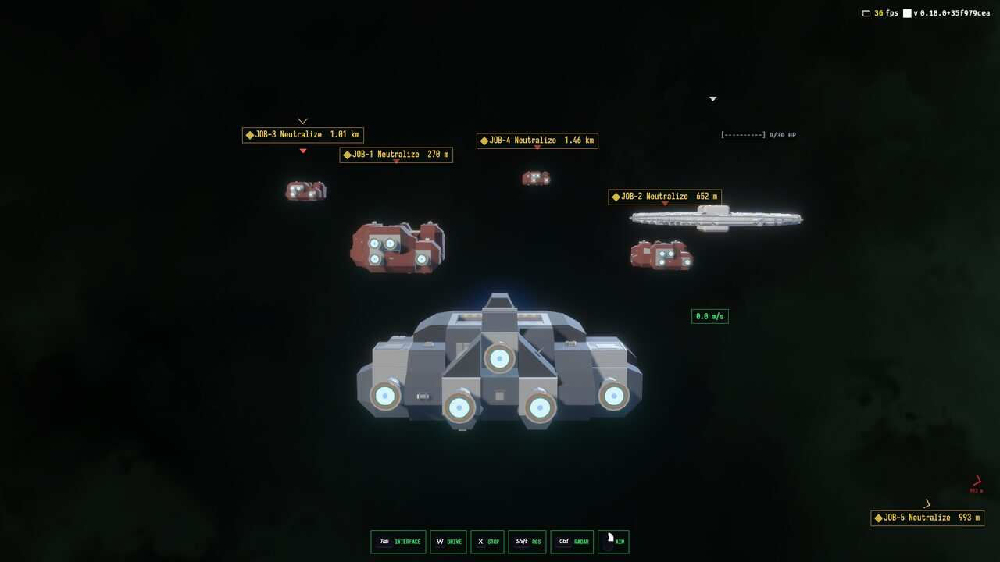
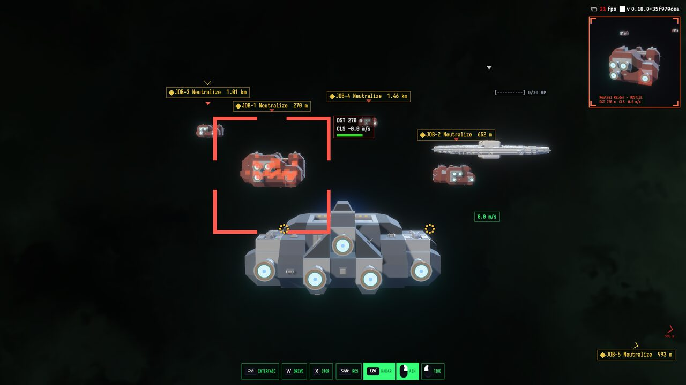
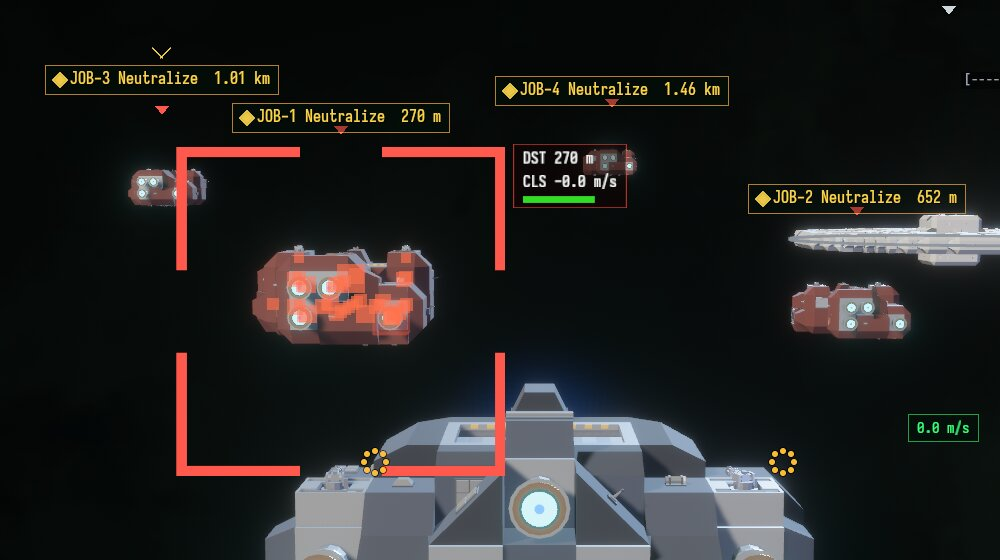

Every marked body carries a full gold chip for as long as its objective lives: diamond, job code, verb and live range. In a fight with several bounty raiders the chips sit over the ships you shoot at. The proposal: the full chip leads you to the target, then it settles into a small gold diamond on the body.
Owner, 2026-11-22: "maybe don't show the neutralize chip for objective for too long on the enemy ships because it adds a lot of UI and makes it hard to see; or like figure out a way to make these floating chips for objectives a bit better". Every option here is a proposal. The owner picks. Scene drawings marked MOCK are drawings, not game frames.
| Option | On screen | Off screen | Reads without prose | Cost |
|---|---|---|---|---|
| A. Settle | Full chip for 4 s after the tag lands, then the diamond only. | Full edge chip, as today. | Count = diamonds. Which = diamond on the body. | SMALL |
| B. Focus | Full chip on the locked or nearest marked body. Diamonds on the rest. | Full edge chip, as today. | Count = chip + diamonds. Which = the chip. | MEDIUM |
| C. Edge leads | Diamond only, always. | Full edge chip, as today. | Count = diamonds + edge chips. | SMALL |
| D. Group | One chip per verb with a count, on the nearest. Diamonds on the rest. | One edge chip per verb. | Count = the number on the chip. | LARGE |
| C + A Recommended | Diamond. The full chip rides onto the body for 4 s when the target comes into view or its label changes. | Full edge chip, as today. | Count = diamonds + edge chips. Which = diamond on the body. Range = the lock readout. | SMALL |
Paths and lines are at 35f979cea (HEAD). The keep-out lane edits most of crates/nova_hud now, so HUD lines can move.
| Layer | Owner | Text | Shows | Goes | Off screen |
|---|---|---|---|---|---|
| Gold objective chip (the subject of this page) | |||||
| Objective marker chip | nova_hud/src/objective_markers.rs:87 spawn :188, clearance :34 anchored_chip.rs:109, label :261 | Diamond + <label> <range>, 16 px, gold pill. Diamond and chevron breathe (1.25 s). | When ObjectiveMarkerTarget lands on a body. | When the tag leaves or the body despawns. | Clamps to the edge, 30 px margin, chevron points to it. |
| Source: held jobs | nova_world_base/src/jobs.rs:1900 label :1938 | JOB-n Neutralize, JOB-n Escort, Recover, Answer, supply verb; JOB-n Hand in on the poster when done. Jobs on one body join: JOB-1, JOB-3 Neutralize. | On accept, or when the body streams in. | Job done: the tag moves to the poster as Hand in. Dropped or completed: gone. | Same chip. |
| Source: encounters | nova_world_base/src/encounters.rs:1284 HAIL :99, SIGNAL :102 | HAIL on a hail caller, SIGNAL on a derelict. Ambush raiders: none. | While the encounter is live. | Encounter over, or SIGNAL inside 1 km. | Same chip. |
| Source: scenarios | nova_scenario/src/actions/mission.rs:335 marks.rs:56 | Authored label, e.g. the tutorial drone names. | On the attach action. | On the detach action. | Same chip. |
| Other layers on the same bodies | |||||
| Allegiance triangle | nova_hud/src/allegiance_markers.rs:274 Hide :221 | None. 14 x 9 px triangle, red for Enemy. | Every non-player ship. | Ship gone. | Hidden. |
| Lock crosshairs and box | nova_hud/src/lock_crosshairs.rs | Distance only, while the radar gesture is held. | Combat (red) or travel (white) lock. | Lock cleared. | Edge arrow (next row). |
| Edge indicators | nova_hud/src/edge_indicators.rs:105 tracked :228 | Arrow, range while shown. | Lock, lock candidates, hostile torpedoes. | Back on screen. | Only off screen. |
| Beacon chip | nova_hud/src/beacon_chips.rs:171 | Cyan BEACON n range. | Every nav beacon. | Hands off to the gold chip while the beacon is marked. | Clamps. |
| Waypoint chip | nova_hud/src/waypoint_chip.rs | Cyan STN-4 128.40 km. | While a chart GOTO flies. | GOTO ends. | Clamps. |
| Cargo canister tag | nova_hud/src/cargo_canister_chips.rs | 4 Hull plate + mass. | Canister in intake reach. | Out of reach. | Hidden. |
| Target inset (fixed) | nova_hud/src/target_inset.rs:130 | Name, faction, NEUTRALIZED flash 1.4 s. | Combat or travel lock. | Lock cleared. | Fixed panel. |
nova_gameplay/src/jobs.rs:1171). A bounty hunter with N held Neutralize jobs has N raider chips. No cap on held jobs was found.nova_authoring/.../tutorial/mod.rs:631).JOB-1 Neutralize 270 m chip is 217 x 28 px over a 180 px wide raider at 270 m, and each chip covers its own red triangle.| Seen in the frames | Where |
|---|---|
| Five gold chips with text and range for five raiders: four on screen, one pinned bottom right. | Both frames |
| Each chip sits on top of its own red allegiance triangle. Only the triangle tip shows under the pill. | Crop: JOB-1, JOB-2, JOB-4 |
| The JOB-1 chip (217 px) is wider than its raider (180 px) at 270 m. | Crop |
| With the lock, the reticle, the DST/CLS readout, the inset and the chip all point at the same raider. The DST box covers the JOB-4 raider. | Lock frame, crop |
| The JOB-3 chip stands above its triangle with a chevron over it, on screen. This build carries the keep-out lane's uncommitted HUD edits; the chip is likely pushed off the JOB-1 chip. Not traced. | Crop, top left |
JOB-5, behind the player, gets two edge cues: the gold chip and a red edge arrow that reads 993 m. | Both frames, bottom right |

[----------] 0/30 HP over the station is the sandbox's own diagnostics label.

How the frames were made: a temporary patch of examples/playable/neutral_contact_sandbox.rs made its raider Enemy, added four more Enemy raiders with no controller, held the clock, tagged each raider JOB-n Neutralize, and set the combat lock for the second shot. The file was restored afterwards (md5 equal, diff empty). Raw PNGs: ~/Pictures/nova-objective-chips/.
Each mock is the same scene: five Enemy raiders on Neutralize jobs, four ahead at 270 m to 1.46 km and one behind on the right, as in the before frames. The player hull is at the bottom; the key row is the green strip.
| Player sees | A new objective announces itself with the full chip, then quiets down to the diamond above the triangle. |
| State without prose | How many left: the diamonds; one goes when its job is done. Which: the diamond is on the body. Range: gone after 4 s, until the player locks it (the lock readout has DST). |
| Cost | One per-chip age component and one system in objective_markers.rs that hides the label and the pill paint after the settle. No change to the tag owners. |
| Dies | The standing on-screen label and range of the gold chip. |
| Weak spot | A target accepted far away settles while it is still off screen. When the player first turns to it, it is a bare diamond with no name. That is the case C fixes. |
| Keep-out | A settled diamond is 12 px; it hardly needs a keep-out slot. The full chip still takes one for 4 s. |
| Player sees | One full chip on the target in hand; diamonds on the rest. |
| State without prose | Count: chip + diamonds. Which: the chip. |
| Cost | A focus pick (lock, else nearest) with hysteresis, so the chip does not jump between two raiders at equal range in a dogfight. |
| Dies | Labels on the unfocused bodies. |
| Weak spot | The full chip sits on the one ship the player is shooting at, which is the case the owner named. The lock reticle, the inset and the chip then say the same thing three times. |
| Keep-out | One full chip on screen at a time, plus edge chips. |
| Player sees | Text only at the screen edge. On screen, a gold diamond above each marked body. |
| State without prose | Count: diamonds + edge chips. Which: the diamond. Range on screen: the lock readout. |
| Cost | Smallest: the placement already knows when a chip is clamped (the chevron shows). Hide label and pill while the chevron is hidden. |
| Dies | Every on-screen gold label and range. |
| Weak spot | A target accepted while it is on screen, or a far station that is on screen but 40 km out, never shows its name or range in flight. A 40 km station is a dot; a diamond on a dot says little. A range gate (full chip beyond 5 km) would fix the far case; it is a variant, not a fifth option. |
| Keep-out | Only edge chips need slots on screen. Diamonds ride their bodies. |
| Player sees | One chip with a count per verb. |
| State without prose | Count: the number. Which job each hull is: lost. |
| Cost | Large. A group owner across tags from three sources (jobs, encounters, scenarios), a pick for the chip host, edge rules for split groups. |
| Dies | Per-job codes on world bodies; the JOB-n link between the chart and the world. |
| Weak spot | Groups happen rarely: one Neutralize job names one hull, and jobs spread raiders 6 to 16 km apart. It solves a scene the content seldom makes. |
| Keep-out | Fewest boxes, but the chip changes host as ranges change. |
4 s after the tag lands, the label changes, or the body comes into view after at least 1 s off screen. Then the diamond only, above the triangle, still breathing.JOB-n Hand in lands on the poster as a fresh tag, so it shows full.NOTICE_DWELL_SECS, hud_notice.rs:95), so all short-lived HUD text keeps one rhythm. Long enough to read a 25-character label twice; short enough to be gone before a merge into a fight. One named constant; tests step a manual clock past it and assert the phase, never wall time.today
ObjectiveMarkerTarget (jobs.rs:1900 | encounters.rs:1284 | mission.rs:335)
-> setup_objective_marker_chip (objective_markers.rs:188)
-> anchored_chip_node: ClampToEdge, CHIP_CLEARANCE (min 36 px)
-> update_anchored_chip_labels: "<label> <range>" every frame
proposed (all inside nova_hud; tag owners unchanged)
ObjectiveMarkerTarget
-> setup_objective_marker_chip + ObjectiveChipPhase { open_until, offscreen_since }
-> update_screen_indicators (writes clamped or not; already known)
-> settle_objective_chips (new, after placement)
clamped -> Full
on screen, in window -> Full
on screen, past 4 s -> Mark: label Display::None, pill paint clear,
clearance min shrinks to the triangle stack
| Item | Detail |
|---|---|
| Owner | crates/nova_hud/src/objective_markers.rs. The pill paint and label come from anchored_chip.rs; beacon and waypoint chips keep their behaviour. |
| Theme | The diamond is the existing 12 px glyph. The pill keeps chip_node corners from the theme; the mark has no box, so no radius literal. |
| Ordering | Lands after the keep-out lane. The settle system runs after the placement in NovaHudSystems and reads the clamp state the placement writes. A shrinking chip changes its measured box one frame late, as any Content chip does today. |
| What may break | Walks that read the on-screen chip text keep working: the label text still updates while hidden. Walks that judge a frame for the label (news_0160_escort_ambush loops, job_board_sandbox HUD shot) will show a diamond after 4 s and need their judgement updated. Tutorial lines that tell the player to "follow the marker" still hold. |
| Docs | web/src/wiki/hud.md objective marker lines (the "Comms and objectives" paragraph); one HUD changelog entry. |
| Proof | Asserted ECS example on a manual clock: a tag on screen shows label and pill, past the settle shows the diamond only; a clamped chip stays full; a label change reopens it. Frames: the busy scene below at 0 s and 5 s, phosphor and hardware. |
neutral_contact_sandbox (restored, diff empty) spawns five Enemy raiders with no AI and tags each JOB-n Neutralize by hand. No real bounty fight was flown.nova_gameplay/src/jobs.rs; a cap elsewhere is not ruled out.Go with C + A: full gold chips only at the screen edge and for 4 s when a target comes into view, a gold diamond on the body after that?